As part of Saturday's AI, we had to develop an AI project using some of the techniques we have learned during the course. One key aspect was the project had to be a social one.
What is more social than saving lives?
The cause of four out of ten accidents in Spain is drivers getting sleepy. Source: Heraldo
Let's create a model to identify when a driver is getting sleepy while driving and put it in a low-cost device like a Raspberry PI so everybody can install it in their cars.
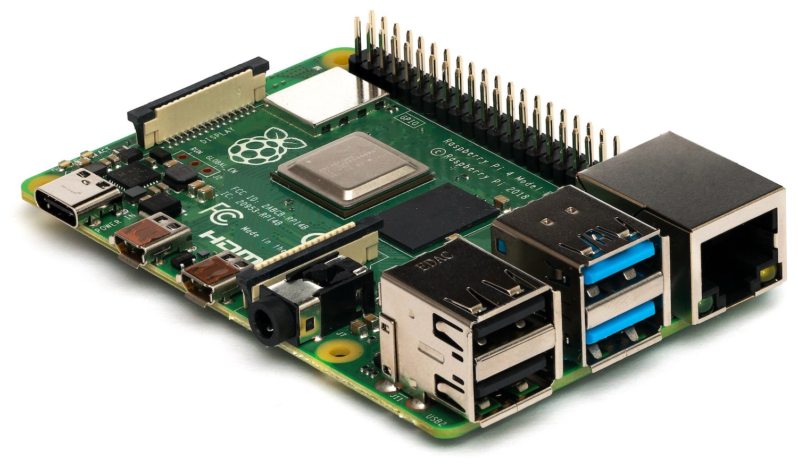
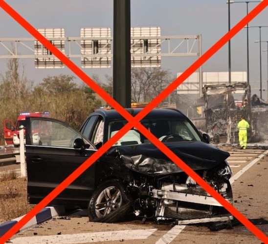
Data set of synthetic videos with different types of situations that allow the analysis of multiple driving situations.
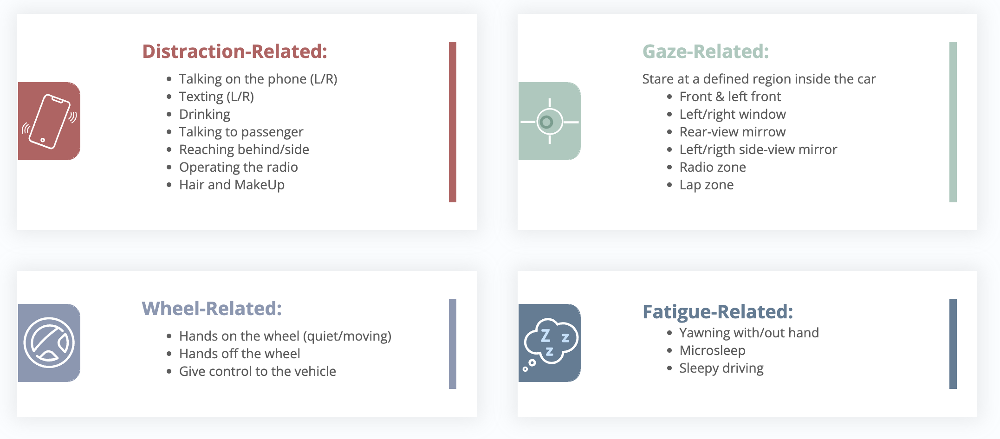
Different cameras allow to take different angles of view and take a multitude of data from the scene.
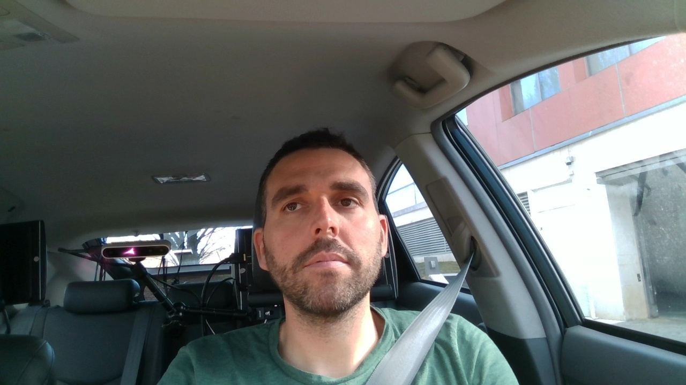
The dataset has tags that allow categorizing whether the driver is falling asleep. However, these data have been transformed to train predictive models.
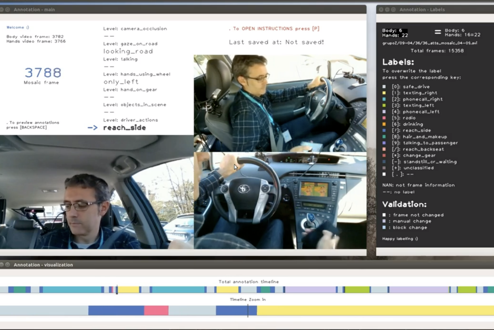
By means of DLIB feature extraction, the most important points of each driver's face were located in the image.
| 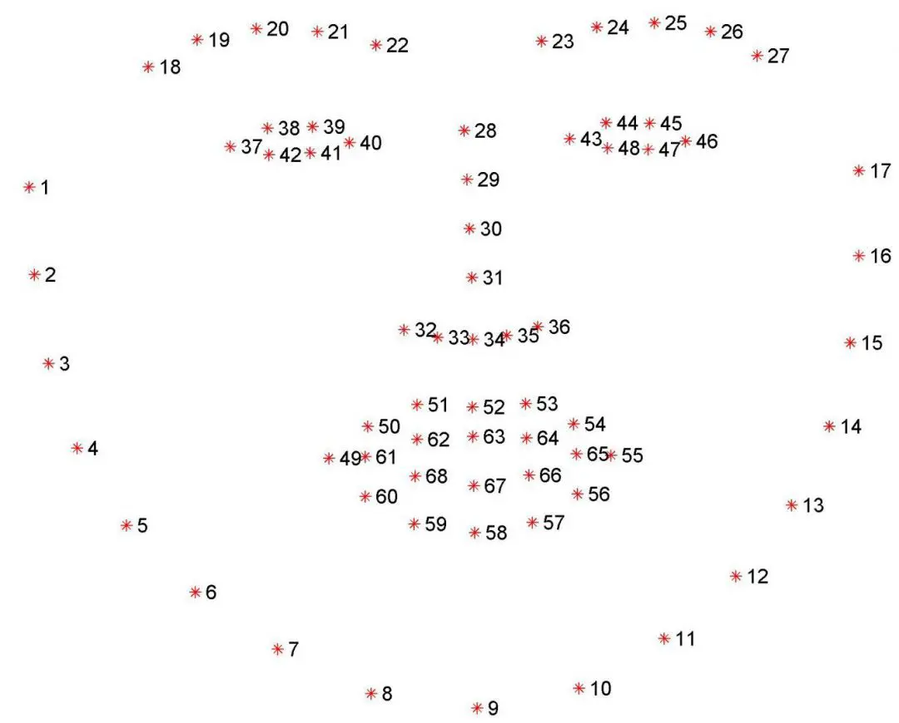 | 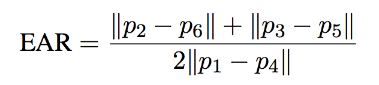 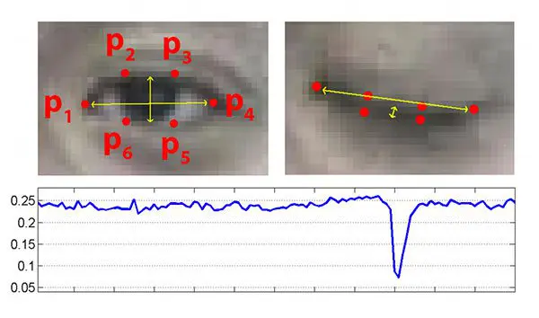 |
CSV conversion with the values of the previous EAR result for the eye and mouth positions. The variable AWAKE indicates whether the driver is awake or drowsy.
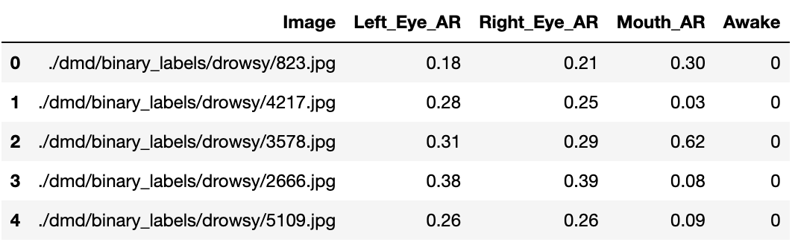
Descriptive analysis of the variables used.
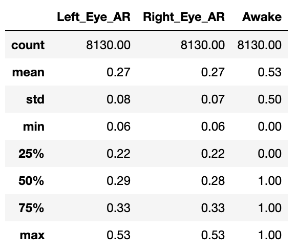
Sampling of the distribution of continuous variables
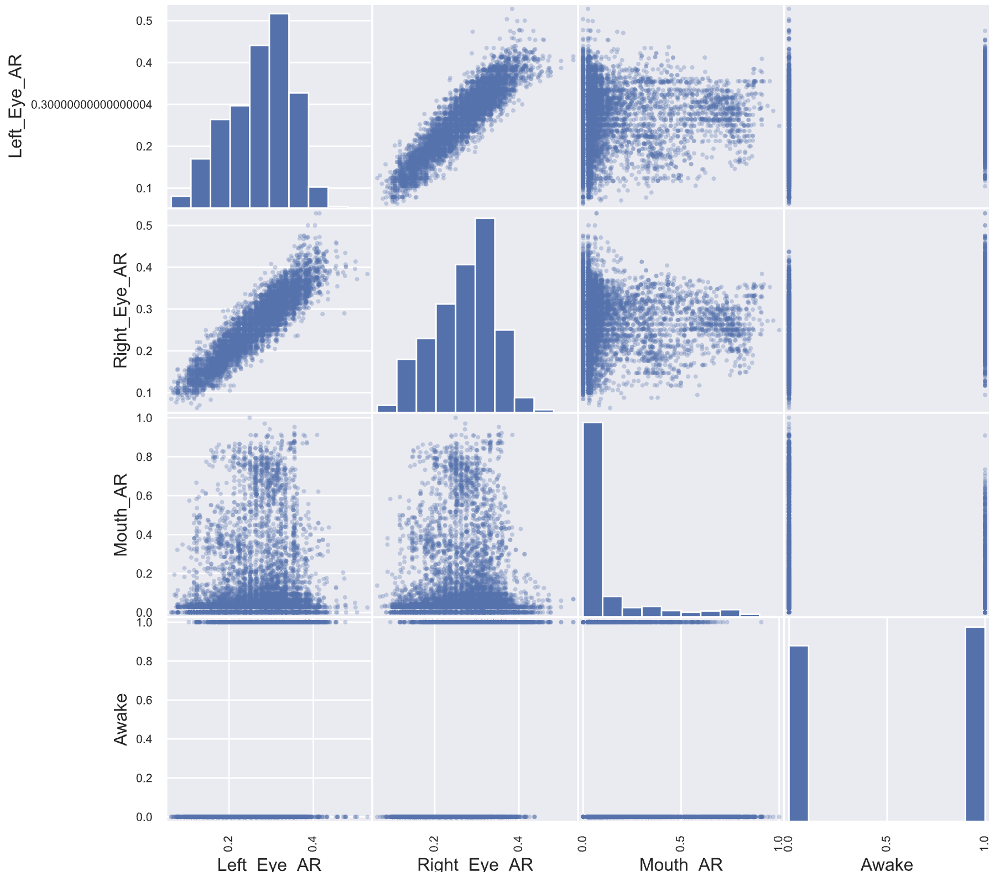
The data are separated into sets for supervised training, using the AWAKE binary tag.
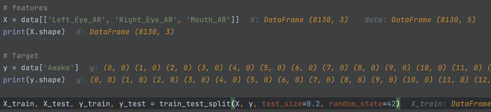
Cross-validation allows to obtain the best selection of hyperparameters in the selected model, optimizing the training result.
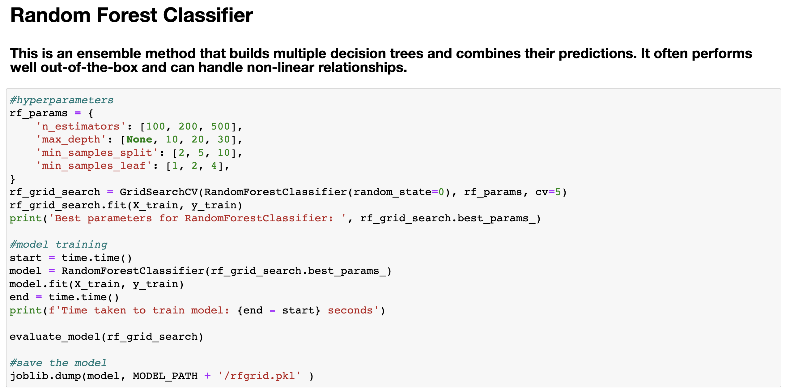
The confusion matrix shows the false positives and negatives that our model detects, this value being quite low compared to the accurate predictions.
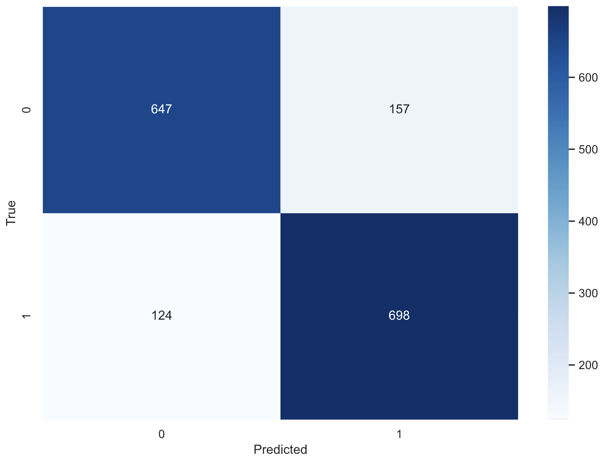
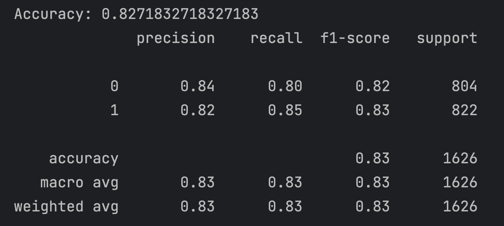